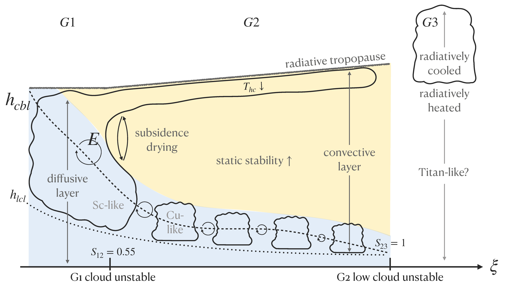

Effects of saturation vapor pressure on climate, clouds, and convection

Motivation
One might reasonably expect that a planet with more moisture in its atmosphere would have more clouds. However, this assumption is contradicted by Titan, the largest moon of Saturn. Titan's atmosphere, comparable in density to Earth's, is also primarily composed of nitrogen. Earth and Titan stand out as the only two bodies in the solar system where it rains at the surface, with liquids forming rivers and seas. The substance responsible for cloud formation and precipitation on Titan is methane, commonly known as natural gas, due to the moon's extreme cold. Titan stores over 100 times more "moisture" in its atmosphere than Earth, mainly because methane's saturation vapor pressure is significantly higher at -180°C compared to water vapor at 15°C. Clouds cover less than 1% of Titan's surface on an annual average (one year on Titan corresponds to 16 years on Earth), in stark contrast to Earth's 70%. This intriguing aspect of Titan motivated us to conduct a comparative study, investigating the impact of varying saturation vapor pressure on the climate and cloud formation of an ``Earth-like” planet. Using Earth as the reference state, we ran a series of simulations with a climate model to better understand the role of moisture. \[e^*(\xi,T) = \xi e(T) \] To determine the modified vapor pressure of water \(e^*\), we scale the true saturation vapor pressure of water \(e\), a function solely dependent on temperature \(T\), by a constant \(0\leq ξ \leq 2\). This range of \(\xi\) is chosen because the vapor pressure of methane on Titan is several times higher than water on Earth. A value of \(\xi=0\) corresponds to a simulation of an Earth-like atmosphere entirely devoid of water. Conversely, for \(\xi=2\), the simulation is configured to mimic an Earth-like atmosphere with a vapor pressure twice as high, leading to conditions rich in vapor. This approach allows us to explore a spectrum of scenarios, adjusting the vapor pressure to study varying levels of water presence in the atmosphere.
Cloud height
Exploring different water vapor pressures led to an intriguing observation regarding cloud heights. Earth's troposphere, often referred to as the weather layer, forms clouds at three distinct altitudes classified as low-level, mid-level, and upper-level. Our climate model, like many others that use humidity-based parameterizations, could effectively capture only low-level and upper-level clouds. Click here to delve into my research on mid-level "congestus clouds". As vapor pressure increased, we observed a descent in low-level clouds and a simultaneous ascent in upper-level clouds.
Low clouds get lower
To explain why high clouds ascend with increasing vapor pressure,
we turned to a well-established theory that cloud tops form where
there are strong vertical decreases in the radiative cooling rate.
The cooling rate, in turn, depends on the molecules in the atmosphere
that absorb and emit infrared radiation, also known as greenhouse gases.
The most important greenhouse gas in Earth’s atmosphere is, of course,
water vapor. Therefore, the absorption lines of water vapor tell an
important story about the locations of clouds and how they
respond to various forcings.
Using basic principles of radiative transfer,
we showed that high clouds form at a constant vapor
path in Earth-like climates. The vapor
path is so-defined as a path integral of the vapor pressure
downwards from the top of the atmosphere to some
arbitrary height \( z\). As \(\xi \) increases, more
water vapor exists at each height of the atmosphere,
and this moves the absorption and emission to higher altitudes,
thus shifting the clouds upward.
High clouds get higher
To shed light on the descent of low clouds,
we employed a model focused on the boundary
layer height. The turbulence in this layer
transports moisture from the surface to the condensation level,
playing a crucial role in cloud formation.
Our investigation revealed a corresponding decline
in the boundary layer height linked to the rise in
tropospheric static stability.
The atmospheric stability increases as a consequence of
higher concentrations of water vapor. This occurs because
the convecting regions experience a slower temperature
decrease with height, attributed to the release of latent heat.
In an environment marked by increased stability,
boundary layer turbulence is confined closer to the surface,
compelling the low clouds to descend.
Tipping points in cloud formation
We found evidence for two transitions in cloud formation with increasing \(\xi \). We explored these transitions in terms of instability parameters that represent the conditions over which certain cloud types should form. In short, we found that low clouds and high clouds merge when the atmosphere is sufficiently dry (because boundary layer turbulence homogenizes the vertical profile of relative humidity on which the model bases cloud droplet growth) and that low clouds disappear when the atmosphere is sufficiently wet (because boundary layer turbulence cannot lift moisture to the condensation level, which is essential for the clouds to persist). For more details, read the publication here or send me an email to request a copy.
Schematic illustration of our varying-\(\xi \) simulations. At intermediate values of \(\xi \), Group 2 (G2) climates are the most ``Earth-like" with well-separated clouds at low and high levels. At low \(\xi \), Group 1 (G1) climates are vapor-poor with a single cloud layer. At high \(\xi \), Group 3 (G3) climates are vapor-rich and the most ``Titan-like" with several meters of precipitable water in their atmospheres. In Earth-like climates, we find that high clouds get higher and low clouds get lower with increasing \(\xi \).